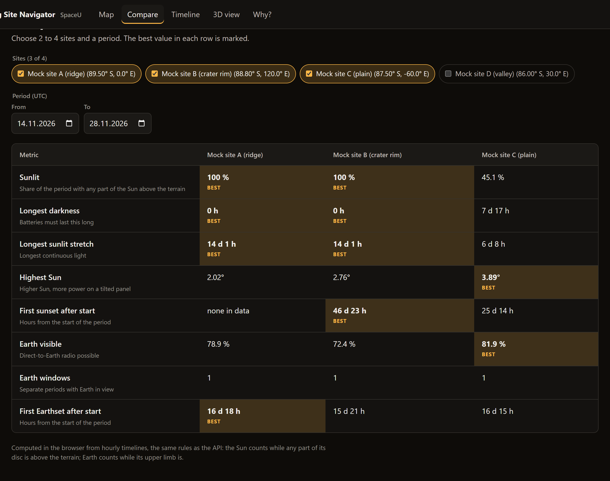
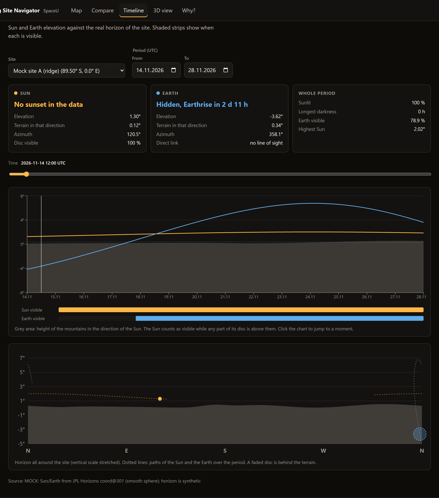
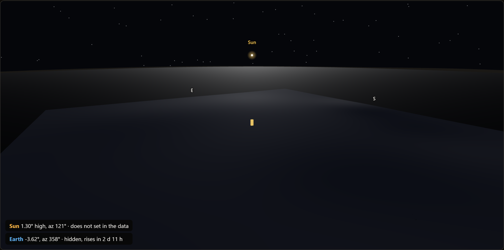
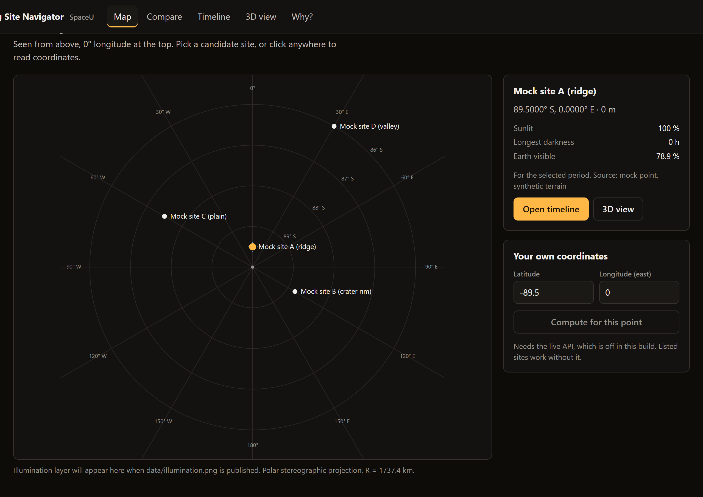

Sun elevation at 89.5° S on 14 Nov 2026. It circles the whole horizon every 29.5 days and never climbs high.
A web tool that compares landing sites and dates by the two things a mission cannot live without: sunlight for power and a view of Earth for radio.
evge14n.github.io/spaceu-lunar-navigator
Team SpaceU, Kyiv: Yevhen · Nazar · Anastasiia U. · Anastasiia Sh.
Sun elevation at 89.5° S on 14 Nov 2026. It circles the whole horizon every 29.5 days and never climbs high.
Guaranteed sunlight at one candidate site when a panel goes from 1 m to 5 m height (Barker et al. 2021).
Earth below the horizon from the same point that day: no direct radio, even with no mountains at all.
So a hill a few kilometres away, a shift of a few hundred metres, or a landing a few days later changes whether a lander has power and can talk to Earth. Planners, teachers and the public need to see this per site and per date.


Same rule as NASA illumination maps: the Sun counts as visible while any part of its disc is above the terrain.
Largest difference in Sun position against JPL Horizons over 1 210 samples (5 points, one year).
Largest difference in Earth position, same test. Target was 0.01°.
Nazar: lit % against the LOLA average illumination map for 3 to 5 points; zero light inside a permanently shadowed crater.


evge14n.github.io/spaceu-lunar-navigator · github.com/Evge14n/spaceu-lunar-navigator